Stokes方程界面问题有限元方法
Stokes方程
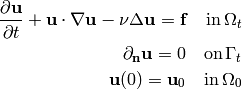
用Lagrange坐标，Stokes方程是对流体微团列的Newton第二运动定律。所以有
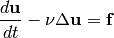
其中
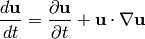
是随体导数，也称为物质导数。
流映射（flow map）
流体微团沿着特征线运功
(1)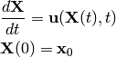
- 设 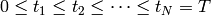 为 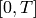 区间上的一个剖分，则时间方向的步长为
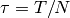. 记从区域 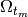 到区域 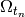 的流映射 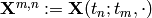 (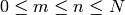) 为以下常微分方程的解
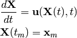
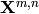 的逆映射记为 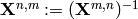
半离散格式
用向后微分公式来离散时间方向（4阶BDF格式），可以得到：
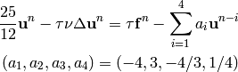
注意到在 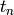 时刻处在 位置的流体微团，在前面的时刻 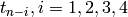 并不在 。 我们需要知道这个流体微团在前面时刻的位置，从而得到 . 这就需要求解特征线方程 (1). 因为要从 时刻递推到 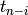 时刻，所以用一个小技巧，令 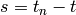，改写 (1) 变成一个描述时间倒着演化的方程。记 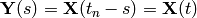 ，则 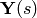 满足 方程
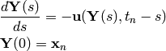
可以用4阶Runge-Kutta格式来求解这个常微分方程。
利用流映射，可以得到半离散数值格式为
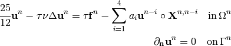